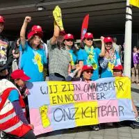
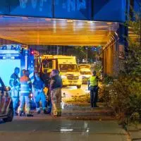

zuidoost
Schietpartij bij Bijlmer Arena op camerabeelden vastgelegd: politie doet oproep aan schutter

18°C
0.0km
goed
Meest bekeken
schoonmakers Willen midden op schiphol staken, maar eindigen op 'achterafpleintje'
STAD
Amsterdamse straat lag afgelopen jaar gemiddeld zes keer open
STAD

Het AT5 nieuws van maandag 9 september
STAD

Automobilist (28) omgekomen bij ongeluk op wibautstraat
OOST
AT5 zendt NOS Journaal in Makkelijke taal uit
NIEUWS